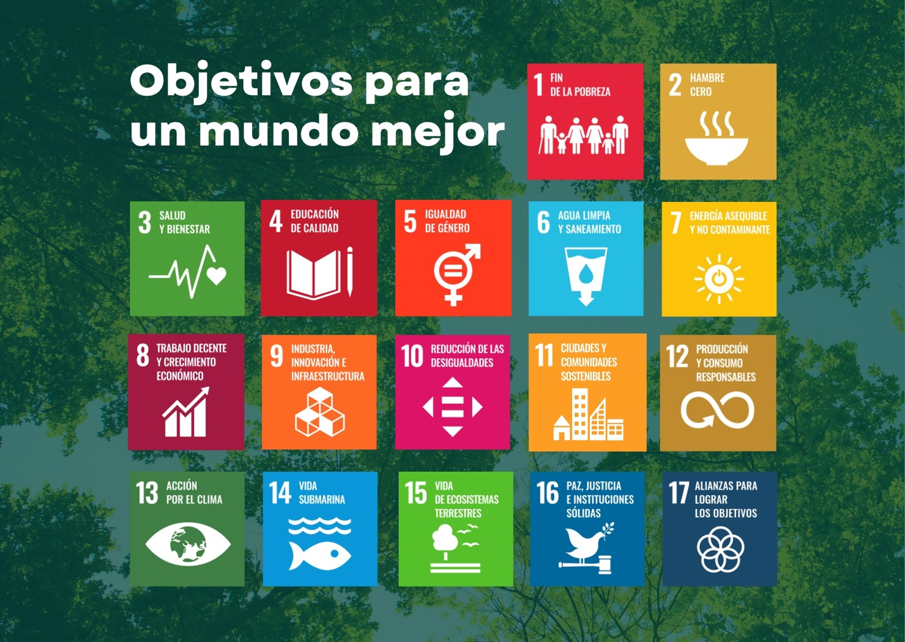

Antes de adentrarnos en la contribución que puede hacer la RSU al logro de los Objetivos de Desarrollo Sostenible, revisemos en qué consisten éstos. Los Objetivos de Desarrollo Sostenible (ODS) son un conjunto de 17 objetivos y 169 metas adoptados por los Estados miembros de las Naciones Unidas como parte de la Agenda 2030 para el Desarrollo Sostenible. Su finalidad es orientar acciones internacionales, nacionales y locales frente a problemas como la pobreza, la desigualdad, el deterioro ambiental, el acceso a la educación y la salud, el trabajo digno, la paz y la justicia.
Una de sus características principales es que los ODS entienden el desarrollo de manera integral e interdependiente ya que reconocemos que los problemas económicos, sociales y ambientales están relacionados y, por ello, no pueden resolverse de forma aislada. En términos generales, buscan articular tres dimensiones fundamentales: desarrollo económico, inclusión social y protección del medio ambiente.
Los 17 ODS son:

- 1. Fin de la pobreza
- 2. Hambre cero
- 3. Salud y bienestar
- 4. Educación de calidad
- 5. Igualdad de género
- 6. Agua limpia y saneamiento
- 7. Energía asequible y no contaminante
- 8. Trabajo decente y crecimiento económico
- 9. Industria, innovación e infraestructura
- 10. Reducción de las desigualdades
- 11. Ciudades y comunidades sostenibles
- 12. Producción y consumo responsables
- 13. Acción por el clima
- 14. Vida submarina
- 15. Vida de ecosistemas terrestres
- 16. Paz, justicia e instituciones sólidas
- 17. Alianzas para lograr los objetivos.
- Imagen tomada de: https://preoca.com/alerta-las-normas-iso-9001-iso-14001-e-iso-45001-no-son-ajenas-al-cambio-climatico/. Consultada el 11/08/2026.
Como hemos visto, la incorporación de los Objetivos de Desarrollo Sostenible en nuestra universidad no debería limitarse a identificar qué actividades institucionales se relacionan con cada objetivo. Desde la perspectiva de la RSU, el desafío consiste en preguntarnos cómo las funciones universitarias -formación, investigación, vinculación social y gestión institucional- pueden contribuir efectivamente a transformar aquellas condiciones económicas, sociales, ambientales y culturales que generan desigualdad, exclusión y deterioro de los territorios.
Actuación conforme a los valores de la Responsabilidad Social Universitaria y el desarrollo territorial sostenible con su escala de valores personales.
Una universidad genera impactos mucho más amplios que los derivados de las clases que imparte, es decir, la universidad no solo transmite conocimiento sino que produce posibilidades de futuro porque cada investigación, tecnología, intervención territorial, profesionista o decisión institucional puede producir consecuencias sociales y ambientales. Por eso, desde la RSU, una pregunta fundamental sería: ¿Qué tipo de sociedad contribuye a construir la universidad mediante el conocimiento que produce y personas que forma? Y esta pregunta resulta particularmente importante frente a los ODS porque muchos de los problemas que estos intentan enfrentar -pobreza, desigualdad, deterioro ambiental, acceso desigual a la salud y la educación, discriminación, modelos insostenibles de producción y consumo- no pueden solucionarse mediante una única disciplina, institución o tecnología.
Collado Ruano (2016), señala precisamente que los problemas vinculados con el desarrollo sostenible exigen nuevas formas de organizar y gestionar el conocimiento, porque el conocimiento científico especializado y monodisciplinario resulta insuficiente para responder por sí solo a problemas políticos, ecológicos, culturales y epistemológicos profundamente interconectados. De ahí su defensa de aproximaciones interdisciplinarias y transdisciplinarias y, especialmente, de una ecología de saberes capaz de dialogar con conocimientos indígenas, ancestrales, artísticos y comunitarios.
Desde la RSU esto implica pasar de una universidad que se cuestiona sobre qué conocimientos puede y debe producir y junto con quiénes, para qué problemas y para beneficio de quiénes. Y esto está ligado a que la RSU es también motor de innovación social.
Habitualmente asociamos la innovación con nuevas tecnologías, patentes, dispositivos, procesos productivos o empresas. Sin embargo, desde una perspectiva de sostenibilidad y RSU, la innovación debe comprenderse de manera mucho más amplia. Una innovación puede ser tecnológica, pero también social, cuando transforma relaciones, formas de organización o mecanismos de participación; ambiental, cuando reduce impactos o recupera ecosistemas; institucional, cuando modifica las maneras de gobernar y tomar decisiones; educativa, cuando genera nuevas formas de aprender; territorial, cuando responde a problemas concretos de una comunidad; y epistemológica, cuando reconoce nuevas formas de producir y compartir conocimiento.
Esta ampliación resulta fundamental desde las epistemologías del sur. Saavedra (s.f), advierte que existe el riesgo de enfrentar los problemas del desarrollo sostenible utilizando únicamente categorías y modelos construidos desde el norte global. Si las soluciones universales continúan considerando que existe una única forma válida de producir conocimiento o de concebir el desarrollo, pueden terminar reproduciendo las mismas relaciones de poder que contribuyeron a generar muchos de los problemas actuales.
De ese modo la innovación universitaria socialmente responsable no debería significar entonces únicamente: más tecnología, sino más y mejores soluciones, socialmente pertinentes, ambientalmente responsables y construidas desde la diversidad de conocimientos existentes en los territorios. Y en ese sentido es importante subrayar que innovar no significa necesariamente producir más. Una innovación puede aumentar la productividad y generar crecimiento económico, pero si produce mayor desigualdad, desplazamiento de comunidades o deterioro ambiental, debemos cuestionar su contribución al desarrollo sostenible.
Es por ello que Jonas (2014), sostiene que la civilización tecnológica ha ampliado extraordinariamente el poder de intervención humana sobre la naturaleza y sobre las condiciones futuras de la vida y por ello, las consecuencias de nuestras acciones pueden extenderse mucho más allá del espacio y del tiempo inmediatos. En ese sentido, la ética tradicional, centrada fundamentalmente en relaciones próximas entre personas contemporáneas, debe ampliarse hacia la responsabilidad por las generaciones futuras y por las condiciones que hacen posible la vida. De esta perspectiva se desprende que una innovación no es socialmente responsable solamente porque sea técnicamente posible; debe ser también ética, social y ambientalmente justificable.
La innovación responsable debe anticipar consecuencias
Uno de los aportes más importantes de Jonas consiste precisamente en ampliar la responsabilidad hacia aquello que todavía no está presente, es decir, la ciencia y la tecnología contemporáneas poseen una capacidad de transformación que puede modificar ecosistemas, territorios, formas de trabajo, relaciones sociales y hasta las posibilidades de vida de generaciones futuras. Esto significa que la universidad, como productora de ciencia, tecnología e innovación, tiene una responsabilidad particular que es analizar todo el ciclo de la producción del conocimiento, la innovación, la aplicación, los impactos y la responsabilidad por las consecuencias futuras.
Desde esta ética es que a RSU se convierte en motor de desarrollo
Como hemos visto anteriormente, no podemos pensar el desarrollo solo como incrementar la producción económica y entonces las universidades considerarse motores del desarrollo porque aumentan la productividad al generan capital humano o producen tecnologías comercializables, de hecho en esta UCA, empleamos una concepción de desarrollo sostenible más amplia. Y desde ella sabemos que la universidad contribuye al desarrollo cuando ayuda a mejorar las capacidades de las personas, las condiciones de vida, el acceso al conocimiento, la equidad, la participación social, el cuidado de los territorios, las condiciones ambientales, la solución de problemas comunitarios y las posibilidades de construir colectivamente futuros dignos.
Desde la RSU, por tanto desarrollo no significa únicamente producir riqueza; significa producir capacidades sociales para vivir dignamente dentro de los límites ecológicos. Esta interpretación permite relacionar la RSU con los ODS sin reducir la universidad a un instrumento económico. Precisamente, el que la universidad contribuya al logro de los ODS desde el Sur Global, es que como bien público se encuentra en un lugar social privilegiado para desarrollar y garantizar la responsabilidad frente al otro, para decirlo con Bauman (2006). Esto quiere decir que la responsabilidad ética no nace simplemente porque una institución nos obligue a actuar, sino porque reconocemos que nuestras decisiones afectan a otras personas.
La RSU no permite preguntarnos quién es el otro para la universidad y para responder que por sus funciones el otro es una o un estudiante que enfrenta condiciones de desigualdad, quien trabaja en la universidad, una comunidad cercana, grupos históricamente discriminados, pueblos indígenas, poblaciones rurales, migrantes, personas con discapacidad, mujeres afectadas por relaciones estructurales de desigualdad, comunidades que soportan impactos ambientales y generaciones futuras.
Por ello es que la responsabilidad social universitaria es tan importante, porque gracias a ella estas personas dejan de ser consideradas únicamente como usuarias, beneficiarias, población objetivo, objetos de investigación o indicadores y son reconocidas como sujetos con dignidad, saberes, experiencias, derechos y capacidad para participar en las decisiones que les afectan.
De hecho Saavedra (s.f), recupera la crítica de Boaventura de Sousa Santos según la cual la injusticia social está estrechamente relacionada con una injusticia cognitiva pues determinados conocimientos han sido históricamente considerados científicos, racionales y universales, mientras otros han sido desacreditados como atrasados, tradicionales, irracionales o improductivos. Así, campesinado, pueblos indígenas, mujeres, comunidades afrodescendientes y múltiples poblaciones subalternizadas no solo han enfrentado explotación material; también han experimentado formas de silenciamiento epistemológico también en lo que corresponde a entender el desarrollo.
Por eso, la RSU debe basarse en la ecología de saberes como principio de innovación, Collado Ruano amplía esta idea y sostiene que los desafíos del desarrollo sostenible requieren una organización transdisciplinaria del conocimiento capaz de dialogar con saberes indígenas, ancestrales, artísticos, filosóficos y otras formas de comprender la relación entre humanidad y naturaleza.
Y esto, a su vez, permite reformular la innovación pues deja centrarse únicamente en ciencia y tecnología y se enfoca en la relación entre ciencia, saber comunitario, experiencia territorial, creatividad social y cooperación. Con todo ello podemos hablar ya de innovación situada porque responde a problemas específicos. Con todo ello podemos afirmar que no existe innovación socialmente responsable sin consideración de sus consecuencias, sin responsabilidad frente a los otros y sin reconocimiento de la diversidad de saberes.
Contribución específica de la universidad, desde la RSU, al logro de los ODS
Desde la perspectiva de la Responsabilidad Social Universitaria, los ODS pueden convertirse en criterios para orientar la formación, la investigación, la participación social y la gestión institucional. Aguilar (2022), plantea precisamente que la RSU debe articular una gestión ecológicamente responsable, la formación integral y socialmente pertinente, la producción y difusión de conocimiento útil y la participación en proyectos construidos con la sociedad. Además, estas acciones deberían incorporarse a la planeación institucional y evaluarse en términos de sus impactos.
La siguiente tabla es un ejemplo de cómo podría operacionalizarse la RSU para contribuir al logro de los ODS:

- Collado, Javier (2016). Epistemología del Sur: una visión decolonial a los Objetivos de Desarrollo Sostenible, Sankofa. Revista de Historia da África e de Estudos da Diáspora Africana Ano IX, NºXVII, agosto, 137-158.
- Saavedra, Karen (s.f). Las epistemologías del sur en el marco del desarrollo global Tres fases de concientización. Documento en línea.
- Jonas, Hans (2014). El Principio de Responsabilidad: Ensayo de una ética para la civilización tecnológica. Barcelona: Herder.
- Bauman, Zygmund (2006). Ética posmoderna, México: Siglo XXI editores.
Para profundizar sobre este tema puedes ver los siguientes videos: